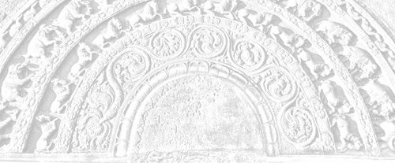

Sermon 10
Namo tassa bhagavato arahato sammāsambuddhassa
Namo tassa bhagavato arahato sammāsambuddhassa
Namo tassa bhagavato arahato sammāsambuddhassaEtaṁ santaṁ, etaṁ paṇītaṁ,
yadidaṁ sabbasaṅkhārasamatho sabbūpadhipaṭinissaggo
taṇhakkhayo virāgo nirodho nibbānaṁ.1“This is peaceful, this is excellent,
namely the stilling of all preparations, the relinquishment of all assets,
the destruction of craving, detachment, cessation, extinction.”
With the permission of the Most Venerable Great Preceptor and the assembly of the venerable meditative monks.
This is the tenth sermon in the series of sermons on Nibbāna. With the help of a parable based on the problem of the gem in the Ummaggajātaka, we made an attempt, towards the end of our last sermon, to clarify to some extent how the personality view arises due to the ignorance of the fact that name-and-form is something reflected on consciousness.
We mentioned in brief how a certain would-be wise man took the trouble to empty a pond and even dig out the mud under the impression that there is actually a gem in it, simply because there appeared to be a gem in the pond.
Similarly, by taking to be real name-and-form, which is only an image reflected on consciousness leading to a personality view, sakkāyadiṭṭhi, both eternalism and nihilism, built on the two views of existence and non-existence, tended towards two extremes. Under the influence of self love, eternalism took up the view that there is a self, and looked forward to its perpetuation. Prompted by self hate, annihilationism or nihilism cherished the fond hope that the release from this self will occur at death. Both these extreme views confuse the issue by not understanding the reflected image as such.
Now how did the middle path, which the Buddha introduced to the world, avoid these two extremes? It is by offering a knowledge and vision of things as they are, yathābhūtañāṇadassana, in place of those two views of existence and non-existence. In other words, he made known to the world the true knowledge and vision that name-and-form is merely an image reflected on consciousness.
There is a special significance in the word yathābhūta. In contradistinction to the two words bhava and vibhava, the word bhūta has some peculiarity of its own. In order to clarify the meaning of the term yathābhūta, we can draw upon a discourse in the Itivuttaka, a few lines of which we had already quoted at the end of the previous sermon. When presented in full, that discourse will make it clear why the Buddha introduced the word bhūta in preference to the existing usage in terms of bhava and vibhava. This is how that discourse proceeds:
Dvīhi, bhikkhave, diṭṭhigatehi pariyuṭṭhitā devamanussā olīyanti eke, atidhāvanti eke, cakkhumanto va passanti. Kathañca, bhikkhave, olīyanti eke? Bhavārāmā, bhikkhave, devamanussā bhavaratā bhavasammuditā, tesaṁ bhavanirodhāya dhamme desiyamāne cittaṁ na pakkhandati na pasīdati na santiṭṭhati nādhimuccati. Evaṁ kho, bhikkhave, olīyanti eke.
Kathañca, bhikkhave, atidhāvanti eke? Bhaveneva kho pana eke aṭṭīyamānā harāyamānā jigucchamānā vibhavaṁ abhinandanti – yato kira, bho, ayaṁ attā kāyassa bhedā paraṁ maraṇā ucchijjati vinassati na hoti paraṁ maraṇā, etaṁ santaṁ etaṁ paṇītaṁ etaṁ yāthāvanti. Evaṁ kho, bhikkhave, atidhāvanti eke.
Kathañca, bhikkhave, cakkhumanto passanti? Idha bhikkhu bhūtaṁ bhūtato passati, bhūtaṁ bhūtato disvā bhūtassa nibbidāya virāgāya nirodhāya paṭipanno hoti. Evaṁ kho, bhikkhave, cakkhumanto va passantī’ti.2
Obsessed by two views, monks, are gods and men, some of whom lag behind, while others overreach. Only they do see that have eyes to see. How, monks, do some lag behind? Gods and men, monks, delight in existence, they are attached to existence, they rejoice in existence. When Dhamma is being preached to them for the cessation of existence, their minds do not reach out towards it, do not get pleased in it, do not get steadied in it, do not rest confident with it. It is thus that some lag behind.
How, monks, do some overreach? Being troubled, ashamed, and disgusted of existence as such, some delight in non-existence – since this self, at the breaking up of this body after death, will be annihilated and destroyed, this is peace, this is excellent, this is how it should be. Thus, monks do some overreach.
And how, monks, do those with eyes see? Herein a monk sees the become as become. Having seen the become as become, he is treading the path towards dejection, dispassion and cessation regarding becoming. Thus it is, monks, that those with eyes see.
This passage clearly brings out the extreme nature of those two views of existence and non-existence. The two verses occurring at the end of this sutta present the gist of the discourse even more clearly:
Ye bhūtaṁ bhūtato disvā,
bhūtassa ca atikkamaṁ,
yathābhūte vimuccanti,
bhavataṇhā parikkhayā.Sa ve bhūtapariñño so,
vītataṇho bhavābhave,
bhūtassa vibhavā bhikkhu,
nāgacchati punabbhavaṁ.Those who have seen the become as become,
As well as the going beyond of whatever has become,
Are released in regard to things as they are,
By the exhaustion of craving for becoming.That monk, who has fully comprehended the become,
Who is devoid of craving for continued becoming,
By the discontinuation of what has become,
Will not come back again to a state of becoming.
Now it is extremely clear, even from the quotation as it stands, that the Buddha has interposed this word bhūta between the dichotomous terms bhava and vibhava. In the contemporary society, these two terms were used to denote the existence and the destruction of a soul. This usage is clearly revealed by some discourses, in which those who held on to similar views expressed them in such terms as bhavissāmi and na bhavissāmi.3 These expressions, meaning ‘I will be’ and ‘I will not be’, carry with them an implication of a person or a self.
The term bhūta, on the other hand, is not amenable to such a usage. It has the passive sense of something that has become. Like that reflection mentioned earlier, it conveys the idea of being produced by causes and conditions. Going by the analogy of the reflected image mentioned above, the eternalist, because of his narcissistic selflove, gets attached to his own self image and lags behind. When the Buddha preaches the Dhamma for the cessation of existence, he shrinks from fear that it would lead to the destruction of his self. It is like the narcissistic attempt to embrace one’s own image in water out of self love.
The annihilationist view leads to an attitude of escapism, like that of one who is obsessed by his own shadow. One cannot outstrip one’s own shadow. It is only a vain attempt. So also is the fond hope of the nihilist that by simply negating self one can be free from repeated birth. It turns out to be mere wishful thinking, because simply by virtue of the view ‘I shall not be after death’ one cannot win deliverance, so long as such defilements like ignorance and craving are there. These were the two extremes towards which those two dogmatic views of eternalism and annihilationism tended.
By introducing the term bhūta the Buddha made it known that the five groups are the product of causes and conditions, that they are conditionally arisen. In the Itivuttaka, for instance, one comes across the following significant lines:
Jātaṁ bhūtaṁ samuppannaṁ, kataṁ saṅkhatamaddhuvaṁ.4
The reference here is to the five groups of grasping. They are ‘born’, ‘become’, ‘arisen’ (that is conditionally arisen), ‘made up’, ‘prepared’, and ‘unstable’. These words are suggestive of some artificiality. The word addhuvaṁ brings out their impermanence and insubstantiality. There is no eternal essence, like sat, or being. It is merely a self image, a reflection. So it seems that the word bhūta has connotations of being a product of causes and conditions.
Therefore, in spite of the scare it has aroused in the soul-theorists, Nibbāna is not something that destroys a truly existing entity. Though Nibbāna is called bhavanirodha,5 cessation of existence, according to the outlook of the Buddha the worldlings have merely a craving for existence, bhavataṅhā, and not a real existence. It is only a conceit of existence, the conceit ‘am’, asmimāna.
In reality it amounts to a craving, and this is the significance of the term taṅhā ponobhāvikā, craving which makes for re-becoming. Because of that craving, which is always bent forward, worldlings keep running round in saṁsāra. But on analysis a concrete situation always reveals a state of a become, a bhūta, as something produced by causes and conditions.
A donkey drags a wagon when a carrot is projected towards it from the wagon. The journey of beings in saṁsāra is something like that. So what we have here is not the destruction of some existing essence of being or a soul. From the point of view of the Dhamma the cessation of existence, or bhavanirodha, amounts to a stopping of the process of becoming, by the removal of the causes leading to it, namely ignorance and craving. It is, in effect, the cessation of suffering itself.
Those who held on to the annihilationist view, entertained the hope that their view itself entitled them to their cherished goal. But it was in vain, because the ignorance, craving, and grasping within them created for them the five groups of grasping, or this mass of suffering, again and again despite their view, uppajjati dukkham idaṁ punappunaṁ.
So what we have here is a deep philosophy of things as they are, which follows a certain law of causality. The Buddha’s middle path is based on this knowledge and vision of things as they are, avoiding both extremes of self indulgence and self mortification.
Let us now consider the question of existence involved in this context. The terms bhava and vibhava are generally associated with the idea of worlds’ existence. Some seem to take atthi, or ‘is’, as the basic element in the grammatical structure. Very often those upholders of dogmatic views brought up such propositions as ‘everything exists’, sabbaṁ atthi, and ‘nothing exists’, sabbaṁ natthi, before the Buddha, expecting him to give a categorical answer.6
But the Buddha pointed out that asmi, or ‘am’, is more basic than the usage of ‘is’ and ‘is not’. The most elementary concept is asmi, or ‘am’. Hence the term asmimāna, the conceit ‘am’. In the grammatical structure, the pride of place should be given to asmi, or ‘am’. We sometimes tend to regard atthi, or ‘is’, as the primary term. But asmi deserves pride of place in so far as it is the basic element in the grammatical structure. It is like the central peg from which all measurings and surveyings of the world start, since the word māna in asmimāna also means ‘measuring’. Given asmi, or ‘am’, everything else comes to be.
Let us take an illustration. If, for instance, we say “there is something”, someone will pose the question: “Where is it?” It should be either here or there or yonder, that is, over there. It can be in one of those three places. Now, if it is here, how does that place become a ‘here’? That is where I am. ‘There’ is where he is, and ‘yonder’ is where you are.
So we have here the framework of the grammar. Here is the basic lining up for the formation of the grammatical structure, its most elementary pattern. So, then, ‘I am’, ‘you are’, and ‘he is’. In this way we see that one can speak of the existence of something relative to a viewpoint represented by ‘am’ or ‘I am’. That is why the Buddha rejected as extremes the two views of absolute existence and absolute non-existence, based on ‘is’, atthi, and ‘is not’, natthi.
Only when there is an ‘I’, can something exist relative to that I. And that something, if it is ‘there’, it is where ‘I’ am not present, or at a distance from me. If it is ‘yonder’, or over there, it is before you who are in front of me. And if it is ‘here’, it is beside me. From this we can see that this conceit ‘am’ is, as it were, the origin of the whole world, the origin of the world of grammar.
On a previous occasion, too, while discussing the significance of the two terms itthabhāva and aññathābhāva, we had to make a similar statement.7 The Buddha draws our attention to a very important fact in this concern, namely, the fact that the conceit ‘am’ does not arise without causes and conditions. It is not something uncaused, and unconditioned. If it is uncaused and unconditioned, it can never be made to cease. The notion ‘am’ arises due to certain causes and conditions. There is a word suggestive of this causal origin, namely upādāya.
Now, for instance, we use the term pañc’upādānakkhandha. When we speak of the five groups of grasping, the word upādāna (upa + ā + dā) is often rendered by grasping. The prefix upa is supposed to imply the tenacity of the hold.8
One can therefore ask whether it is not sufficient to relax the hold on the five groups. Strictly speaking, the prefix upa in upādāna conveys the sense of proximity or nearness. Sometimes the two words upeti and upādiyati are found in juxtaposition. Upeti, upa + i, to go, means ‘coming near’ or ‘approaching’, and upādiyati has the sense of ‘holding on to’, having come close. In other words, we have here not only a case of holding, but of holding ‘on to’.
So the totality of existence, from the point of view of Dhamma, is dependent on a holding on, or a grasping on. It is not something uncaused and unconditioned. Here we may remind ourselves of the simile of the winding of a rope or a cord which we brought up in a previous sermon.9 We cannot help going back to the same simile again and again, if we are to deepen our understanding of the Dhamma.
In that illustration we spoke of two persons winding up several strands to make a rope or a cord. But both are winding in the same direction from either end. Such an attempt at winding, however long it is continued, does not result in an actual winding, for the simple reason that the winding from one end is continually being unwinded from the other end. But what happens if a third person catches hold of the rope in the middle? Due to that hold on the middle, something like a rope appears to get winded up.
Now existence, too, is something similar. It is because of the hold in the middle that the rope gets wound up. From the point of view of an outsider, the one in the middle is holding on to a rope. But the truth is, that the semblance of a rope is there due to that holding on itself. This, then, is the norm of this world. “Whatever is of a nature to arise, all that is of a nature to cease,” yaṁ kiñci samudayadhammaṁ, sabbaṁ taṁ nirodhadhammaṁ.10
It is in the nature of things that every winding ends up in an unwinding. But because of that hold in the middle, the windings get accumulated. Just because of his hold in the middle, his hand is under stress and strain. Similarly, the stress and strain that is existence is also due to a grasping or a holding on to, upādānapaccayā bhavo.
In fact, we have not given this illustration merely for the sake of a simile. We can adduce reasons for its validity even from the discourses. This word upādāya is particularly noteworthy. As we have already shown, upādāna does not simply mean grasping, or grasping rigidly, but holding on to something, having come close to it. This holding on creates a certain relationship, which may be technically termed a relativity. The two stand relative to each other. For instance, that rope exists relative to the grasping of the person who holds on to it. Now upādāya is the absolutive form of upādāna, it has the implication of something relative.
There is a discourse in the Khandhasaṁyutta, which clearly reveals this fact. It is a sermon preached by Venerable Puṇṇa Mantāṇiputta to Venerable Ānanda. This is the relevant paragraph:
Upādāya, āvuso Ānanda, asmīti hoti, no anupādāya. Kiñca upādāya asmīti hoti, no anupādāya? Rūpaṁ upādāya asmīti hoti, no anupādāya; vedanaṁ upādāya asmīti hoti, no anupādāya; saññaṁ upādāya asmīti hoti, no anupādāya; saṅkhāre upādāya asmīti hoti, no anupādāya; viññāṇaṁ upādāya asmīti hoti, no anupādāya. Upādāya, āvuso Ānanda, asmīti hoti, no anupādāya.
Seyyathāpi, āvuso Ānanda, itthī vā puriso vā daharo yuvā maṇḍanakajātiko ādāse vā parisuddhe pariyodāte acche vā udakapatte sakaṁ mukhanimittaṁ paccavekkhamāno upādāya passeyya, no anupādāya, evam eva kho, āvuso Ānanda, upādāya asmīti hoti, no anupādāya.11
Let us now try to get at the meaning of this important passage, which should clarify further what we have already attempted to explain through similes.
It is with dependence, friend Ānanda, that the notion ‘am’ occurs, not without dependence. With dependence on what, does the notion ‘am’ occur, and not without dependence? With dependence on form does the notion ‘am’ occur, not without dependence; with dependence on feeling does the notion ‘am’ occur, not without dependence; with dependence on perception does the notion ‘am’ occur, not without dependence; with dependence on preparations does the notion ‘am’ occur, not without dependence; with dependence on consciousness does the notion ‘am’ occur, not without dependence.
Just as, friend Ānanda, a woman or a man, youthful and fond of adornment, in looking at her or his facial image in a mirror or in a bowl filled with pure, clear, clean water, would be seeing it with dependence and not without dependence, even so, friend Ānanda, it is with dependence that the notion ‘am’ occurs, not without dependence.
In fact, it is rather difficult to render the word upādāya. It means ‘in dependence on’ something and has a relative sense. Reinforced with the emphatic double negative, the assertion seems to imply that the notion ‘am’ is something dependent and not independent, that it arises due to causes and conditions. In the explanation that follows, this dictum is substantiated by bringing in the five groups or aggregates, relative to which one posits an ‘am’.
The subsequent illustration serves to bring out the required nuance of the term upādāya, which is more often connected with the rather gross idea of grasping. The young woman or the young man is looking at her or his face in a mirror. They can see their own face, or the sign of it, mukhanimitta, only with the help of a mirror, that is, as an image reflected on it. They are dependent on a mirror or a similar object for seeing their own face, not independent.
What Venerable Puṇṇa Mantāṇiputta seems to stress, is that the notion ‘am’ is the result of grasping or holding on to form, feeling, perception, preparations, and consciousness. It is when one looks into a mirror that one suddenly becomes self-conscious. Whether one has a liking or a dislike for what one sees, one gets the notion ‘this is me’. So it is by coming close to a mirror which reflects one’s facial image that the notion ‘am’ occurs depending on it. The word upādāya therefore approximates to the idea of coming close and holding on to.
That notion occurs due to a relationship arising from that holding on. Even if one already has no such notion, the moment one looks into a mirror one is suddenly reminded of it, as if to exclaim: “Ah, here I am!” This is the gist of what Venerable Puṇṇa Mantāṇiputta is trying to put across through this discourse.
This shows that the conceit ‘am’ arises due to the five grasping groups. The absolutive upādāya, though akin to upādāna, has a deeper significance. It is a word suggestive of a relationship. It does not merely mean a holding on, but also a certain necessary relationship arising out of that holding on.
Just as the looking into a mirror or a bowl of water gives rise to a facial image as a reflection, here too the relationship calls forth the deluded reflection “here I am”. Given the notion “here I am”, there follows the corollary “things that are mine”.
So there is supposed to be an ‘I’ in contradistinction to things that are ‘mine’. It is the difficulty to demarcate the area of applicability between these two concepts that has given rise to insoluble problems. “Who am I and what is mine?” The twenty modes of personality view, sakkāya diṭṭhi, portray how one is at one’s wit’s end to solve this problem.
Let us now see how the twenty modes of personality view are made up. For instance, as regards form, it is fourfold as follows:
Rūpaṁ attato samanupassati, rūpavantaṁ vā attānaṁ, attani vā rūpaṁ, rūpasmiṁ vā attānaṁ.12
He regards form as self, or self as possessing form, or form as in self, or self as in form.
It is the same with the other four groups. In this way, the personality view is altogether twenty-fold.
All this comes about due to the ignorance that name-and-form is only a reflection, like that facial image. In grasping this self image of name-and-form one grasps the five groups. Attachment to name-and-form amounts to a holding on to these five groups. To many, the relationship between name-and-form and the grasping groups appears as a big puzzle. Wherever one looks, one sees this self image of name-and-form. But when one grasps it, what comes within the grasp is a group of form, feeling, perception, preparations, and consciousness.
The magical illusion created by consciousness is so complete that it is capable of playing a dual role, as in double acting. Because it reflects, like a mirror, consciousness itself is grasped, just as one grasps the mirror. Not only the reflection of the mirror, but the mirror itself is grasped. The grasping group of consciousness represents such a predicament.
One can form an idea about the relation between name-and-form and consciousness by going deeper into the implications of this discourse. In the discussion of the interrelation between name and form, the Buddha makes use of two highly significant terms, namely adhivacanasamphassa and paṭighasamphassa.
How contact arises dependent on name-and-form is explained by the Buddha in the Mahānidānasutta of the Dīgha Nikāya.13 It is addressed to Venerable Ānanda in the form of a catechism.
Phassa, or contact, is a sort of hybrid, carrying with it the implications of both adhivacanasamphassa and paṭighasamphassa. That is to say, it partakes of the character of name, nāma, as suggested by adhivacanasamphassa, as well as that of form, rūpa, indicated by paṭighasamphassa. This will be clear from the relevant section of the catechism in the Mahānidānasutta:
“Nāmarūpapaccayā phasso’ti iti kho panetaṁ vuttaṁ, tad’Ānanda, imināpetaṁ pariyāyena veditabbaṁ, yathā nāmarūpapaccayā phasso. Yehi, Ānanda, ākārehi yehi liṅgehi yehi nimittehi yehi uddesehi nāmakāyassa paññatti hoti, tesu ākāresu tesu liṅgesu tesu nimittesu tesu uddesesu asati api nu kho rūpakāye adhivacanasamphasso paññāyethā’ti?”
“No hetaṁ, bhante.”
“Yehi, Ānanda, ākārehi yehi liṅgehi yehi nimittehi yehi uddesehi rūpakāyassa paññatti hoti, tesu ākāresu tesu liṅgesu tesu nimittesu tesu uddesesu asati api nu kho nāmakāye paṭighasamphasso paññāyethā’ti?”
“No hetaṁ, bhante.”
“Yehi, Ānanda, ākārehi yehi liṅgehi yehi nimittehi yehi uddesehi nāmakāyassa ca rūpakāyassa ca paññatti hoti, tesu ākāresu tesu liṅgesu tesu nimittesu tesu uddesesu asati api nu kho adhivacanasamphasso vā paṭighasamphasso vā paññāyethā’ti?”
“No hetaṁ, bhante.”
“Yehi, Ānanda, ākārehi yehi liṅgehi yehi nimittehi yehi uddesehi nāmarūpassa paññatti hoti, tesu ākāresu tesu liṅgesu tesu nimittesu tesu uddesesu asati api nu kho phasso paññāyethā’ti?”
“No hetaṁ, bhante.”
“Tasmātih’Ānanda, eseva hetu etaṁ nidānaṁ esa samudayo esa paccayo phassassa, yadidaṁ nāmarūpaṁ.”
“From name-and-form as condition, contact comes to be. Thus it has been said above. And that Ānanda, should be understood in this manner, too, as to how from name-and-form as condition, contact arises. If, Ānanda, all those modes, characteristics, signs and exponents, by which the name-group, nāma-kāya, is designated were absent, would there be manifest any verbal impression, adhivacanasamphassa, in the form-group, rūpa-kāya?”
“There would not, lord.”
“If, Ānanda, all those modes, characteristics, signs and exponents, by which the form-group is designated were absent, would there be manifest any resistance-impression, paṭighasamphasso, in the name-group?”
“There would not, lord.”
“And if, Ānanda, all those modes, characteristics, signs and exponents, by which there is a designation of both name-group and form-group were absent, would there be manifest either any verbal impression or any resistance-impression?”
“There would not, lord.”
“And if, Ānanda, all those modes, characteristics, signs and exponents, by which there comes to be a designation of name-and-form were absent, would there be manifest any contact?”
“There would not, lord.”
“Wherefore, Ānanda, this itself is the cause, this is the origin, this is the condition for contact, that is to say, name-and-form.”
With the help of four words of allied sense, namely ākāra, mode, liṅga, characteristic, nimitta, sign, and uddesa, exponent, the Buddha catechetically brings out four conclusions by this disquisition. They are:
-
By whatever modes, characteristics, signs and exponents the name-group, nāma-kāya, is designated, in their absence no designation of verbal impression, adhivacanasamphassa, in the form-group, rūpa-kāya, is possible.
-
By whatever modes, characteristics, signs and exponents the form-group is designated, in their absence no designation of resistance-impression, paṭighasamphasso, in the name-group, nāmakāya, is possible.
-
By whatever modes, characteristics, signs and exponents both name-group and form-group are designated, in their absence no designation of verbal impression or resistance-impression is possible.
-
By whatever modes, characteristics, signs and exponents name-and-form is designated, in their absence no designation of contact is possible.
All this may well appear like a riddle, but then let us consider what name-and-form means, to begin with. The definition we gave to nāma in our very first sermon happened to be different from the well known definition nowadays given in terms of a bending.14
We interpreted nāma in the sense of a ‘naming’. Now this term adhivacana also conveys the same idea. Adhivacana, synonym, nirutti, nomenclature, and paññatti, designation, are part and parcel of linguistic usage.
In the Niruttipathasutta of the Khandhasaṁyutta one comes across three terms, niruttipatha, adhivacanapatha, and paññattipatha, pathways of nomenclature, pathways of synonyms, pathways of designation.15 There three terms are closely allied in meaning, in that they bring out in sharp relief three aspects of linguistic usage.
Nirutti emphasises the explanatory or expository function of language, adhivacana its symbolic and metaphorical character, while paññatti brings out its dependence on convention.
What we have here is adhivacanasamphassa. Its affinity to name is obvious, and this is precisely the meaning we attributed to nāma. Therefore, what we have in this concept of nāmakāya, or name-group, literally ‘name-body’, is a set of first principles in linguistic usage pertaining to definition.
The form-group, or rūpakāya, literally ‘form-body’, on the other hand has something to do with resistance, as suggested by the term paṭighasamphassa. Paṭigha means ‘striking against’. Form, or rūpa, has a striking quality, while name, or nāma, has a descriptive quality. Phassa, or contact, is a hybrid of these two. This is what gives a deeper dimension to the above disquisition.
The point that the Buddha seeks to drive home is the fact that the concept of contact necessarily presupposes both name and form. In other words, name and form are mutually interrelated, as already stated above. There would be no verbal impression in the form-group, if there were no modes, characteristics, etc., proper to name. Likewise there could be no resistant impression in the name-group, if there were no modes, characteristics, etc., proper to form.
At first sight these two may appear as totally opposed to each other. But what is implied is a case of mutual interrelation. The expression peculiar to the name-group is a necessary condition for the form-group, while the resistance peculiar to the form-group is a necessary condition for the name-group. Since here we have something deep, let us go for an illustration for the sake of clarity.
As we have already stated, a verbal impression in regard to the form-group is there because of the constituents of the name-group. Now the form-group consists of the four great primaries earth, water, fire and air. Even to distinguish between them by their qualities of hardness and softness, hotness and coolness, etc., feeling, perception, intention, contact and attention, which are the constituents of the name-group, have to play their part. Thus it is with the help of those members on the name side that the four basic elements associated with form receive recognition.
Metaphor is a figure of speech, common in ornate literary language as well as in technical terminology. Here the inanimate is animated by personification. What is proper to the animate world is superimposed on the inanimate. Now the word adhivacana is, even literally, a superimposition, and it is a term with obvious metaphorical associations. Whereas in the literary field it has an ornate value as a figurative expression, in technical usage it serves the purpose of facility of expression by getting the tools to speak for themselves.
For instance, a carpenter might speak of two planks touching each other as if they can actually touch and feel. The concept of touch, even when it is attributed to inanimate objects, is the outcome of attention, in this case the attention of the carpenter. Here, again, we are reminded of the role of attention in the origination of things as stated in the Kiṁmūlakasutta and Samiddhisutta discussed above.16
In accordance with the dictum “Mind is the forerunner of all things”,17 “All things are rooted in interest, they originate with attention and arise out of contact”, chandamūlakā, āvuso, sabbe dhammā, manasikārasambhavā, phassasamudayā (etc.).18 Wherever the carpenter’s interest went, his attention discovered and picked up the thing, and here the thing is the fact of two planks touching each other.
Interest, attention and contact together bring out some deeper implications of the law of dependent arising. Not only with regard to inanimate objects, but even in the case of this conscious body, the question of contact is related to the fact of attention.
If, for instance I ask what I am touching now, one might say that I am touching the palm leaf fan in my hand. This is because we usually associate the idea of touching with the hand that holds. But suppose I put away the fan and ask again what I am touching now, one might find it difficult to answer. It might not be possible for another to guess by mere external observation, since it is essentially subjective. It is dependent on my attention. It could even be my robe that I am touching in the sense of contact, in which case I am becoming conscious of my body as apart from the robe I am wearing.
Consciousness follows in the wake of attention. Whatever my attention picks up, of that I am conscious. Though I have in front of me so many apparently visible objects, until my attention is focussed, eye-consciousness does not come about. The basic function of this type of consciousness, then, is to distinguish between the eye and the object seen. It is only after the eye has become conscious, that other factors necessary for sense perception fall into place.
The two things born of that basic discrimination, together with the discriminating consciousness itself, that is eye-consciousness, make up the concept of contact.
Cakkhuñca paṭicca rūpe ca uppajjati cakkhuviññāṇaṁ, tiṇṇaṁ saṅgati phasso.19
Dependent on eye and forms, eye-consciousness arises, the concurrence of the three is contact.
The same principle holds good in the case of the two planks touching each other. All this goes to show that it is with the help of the factors in the name-group that we can even metaphorically speak of a contact between inanimate things.
Let us now consider how resistance-impression, paṭighasamphassa, comes about. It is said that the factors of the form-group have a part to play in producing resistance-impression on the name-group. We sometimes speak of an idea ‘striking us’, as if it were something material. Or else an idea could be ‘at the back’ of our mind and a word ‘on the tip’ of our tongue.
The clearest manifestation of contact is that between material objects, where collision is suggestive of resistance, as implied by the word paṭigha. This primary sense of striking against or striking together is implicit even in the simile given by the Buddha in the Dhātuvibhaṅgasutta of the Majjhima Nikāya, and in the Phassamūlakasutta of the Saṁyutta Nikāya, concerning two sticks being rubbed together to kindle a fire.20
Though as a gross manifestation contact is primarily associated with the form-group, it is essentially connected with the name-group, as we have already explained with illustrations. It is when both resistance-impression and verbal impression come together that contact arises, dependent on name-and-form, nāmarūpapaccayā phasso.
Another point that needs to be clarified in this connection is the exact significance of the word rūpa. This word has been variously interpreted and explained among different Buddhist sects. How did the Buddha define rūpa? In ordinary usage it can mean either forms visible to the eye, or whatever is generally spoken of as ‘material’. Its exact significance has become a subject of controversy. What precisely do we mean by ‘rūpa’?
The Buddha himself has explained the word, giving the following etymology in the Khajjanīyasutta of the Khandhasaṁyutta in the Saṁyutta Nikāya. While defining the five groups there, he defines the form group as follows:
Kiñca, bhikkhave, rūpaṁ vadetha? Ruppatī’ti kho, bhikkhave, tasmā rūpan’ti vuccati. Kena ruppati? Sītena pi ruppati, uṇhena pi ruppati, jighacchāya pi ruppati, pipāsāya pi ruppati, daṁsamakasavātātapasiriṁsapasamphassena pi ruppati. Ruppatī’ti kho, bhikkhave, tasmā rūpan’ti vuccati.21
And what, monks, do you call rūpa? It is affected, monks, that is why it is called rūpa. Affected by what? Affected by cold, affected by heat, affected by hunger, affected by thirst, affected by contact with gadflies, mosquitoes, wind, sun and serpents. It is affected, monks, that is why it is called rūpa.
This definition seems to convey something very deep, so much so that various Buddhist sects came out with various interpretations of this passage. The Buddha departs from the way of approach taken up by the materialistic systems of thought in the world in defining rūpa with ruppati, ‘being affected’.
It is not the inanimate trees and rocks in the world that are said to be affected by cold and heat, but this conscious body. So this body is not conceived of as a bundle of atoms to be animated by introducing into it a life faculty, jīvitindriya. What is meant by rūpa is this same body, this body with form, which, for the meditator, is a fact of experience.
Attempts at interpretation from a scholastic point of view created a lot of complications. But the definition, as it stands, is clear enough. It is directly addressed to experience. The purpose of the entire Dhamma preached by the Buddha is not to encourage an academic dabbling in philosophical subtleties with a mere jumble of words. The purpose is utter disenchantment, dispassion and cessation, ekantanibbidāya, virāgāya, nirodhāya.22
Therefore the etymology given here in terms of ruppati, ‘to be affected’, is in full accord with that purpose. Rūpa is so called, because it is affected by cold, heat, and the sting of gadflies, mosquitoes, etc., not because of any atomism in it.
If we are to examine further the meaning of this verb ruppati, we can count on the following quotation from the Piṅgiyasutta of the Pārāyanavagga in the Sutta Nipāta. It runs:
ruppanti rūpesu janā pamattā,23
heedless men are affected in regard to forms.
The canonical commentary Cūḷaniddesa, commenting on the word, brings out the various nuances connected with it.
Ruppantīti kuppanti pīḷayanti ghaṭṭayanti byādhitā domanassitā honti.24
Ruppanti means to be adversely affected, to be afflicted, to come into contact with, to be dis-eased and dis-pleased.
Surely it is not the trees and rocks that are affected in this manner. It is this animate body that is subject to all this. The pragmatic purpose of utter detachment, dispassion and cessation is clear enough even from this commentary.
What is known as the form-group, rūpakkhandha, is one vast wound with nine apertures.25 This wound is affected when it is touched by cold and heat, when gadflies and mosquitoes land on it. This wound gets irritated by them.
We come across yet another canonical reference in support of these nuances in the following two lines in the Uṭṭhānasutta of the Sutta Nipāta.
Āturānañhi kā niddā, sallaviddhāna ruppataṁ.26
For what sleep could there be for those who are afflicted, being pierced with a dart.
These two lines stress the need for heedfulness for beings pierced with the arrow of craving. Here, too, the verb ruppati has the sense of being affected or afflicted. All this goes to show that the early Buddhist concept of rūpa had a striking simplicity about it.
As we have already stated at the very outset, the teachings in the discourses are simple enough. But there is a certain depth in this very simplicity, for it is only when the water is lucid and limpid that one can see the bottom of a pond. But with the passage of time there was a tendency to lose interest in these discourses, because of the general predilection for complexity.
Materialistic philosophers, in particular, were carried away by this trend, whether they were Hindus or Buddhists. Modern day scientists, too, got caught in this trend. They pursued the materialistic overtones of the word rūpa, without realizing that they are running after a mirage.
They went on analysing matter, until they ended up with an atomism and grasped a heap of concepts. The analysis of matter thus precipitated a grasping of a mass of concepts. Whether one grasps a pole or a mole, it is a grasping all the same.
The Buddha’s admonitions, on the contrary, point in a different direction. He pointed out that in order to be free from the burdensome oppression of form, one has to be free from the perception of form. What is of relevance here is the very perception of form, rūpasaññā. From the point of view of Dhamma, any attempt at analysis of the materialistic concept of form, or any microscopic analysis of matter, would lead to a pursuit of a mirage.
This fact, the modern day scientist is now in a position to appreciate. He has found that the mind with which he carries on the analysis is influencing his findings at every level. In other words, he has been running after a mirage, due to his ignorance of the mutual interrelation between name and form. One would not be in such a plight, if one understands that the real problem at issue is not that of form, but of the perception of form.
In an earlier sermon we happened to quote a verse which makes it extremely clear. Let us now hark back to that verse, which occurs in the Jaṭāsutta of the Saṁyutta Nikāya.
Yattha nāmañca rūpañca,
asesaṁ uparujjhati,
paṭighaṁ rūpasaññā ca,
etthesā chijjate jaṭā.27Where name and form
As well as resistance and perception of form
Are completely cut off,
It is there that the tangle gets snapped.
The entire saṁsāric problem is solved when the tangle gets snapped. Name and form, resistance and perception of form are completely cut off in that non-manifestative consciousness mentioned in our earlier sermons.28 That, in effect, is the end of the tangle within and the tangle without.
Our discussion of the law of dependent arising must have made it clear that there is an interrelation between name-and-form and consciousness on the one hand, and between name and form themselves on the other. This, then, is a case of a tangle within and a tangle without.
Like the central spot of a whirlpool, the deepest point of the entire formula of paṭicca samuppāda is traceable to the interrelation that obtains between name and form on the one hand, and between name-and-form and consciousness on the other.
As far as the significance of perception of form is concerned, the true purpose of the spiritual endeavour, according to the Buddha, is the very freedom from this perception of form. How does perception of form come about? It is due to that ‘striking against’, or resistance. Perception of form arises, for instance, when gadflies and mosquitoes land on this body.
As we have already mentioned, even the distinctions of hard and soft, etc., with which we recognize the four elements, is a matter of touching. We are only trying to measure and gauge the four great primaries with this human frame. We can never ever comprehend fully the gamut of these four great primaries. But we are trying to understand them through this human frame in a way that is meaningful to our lives.
All kinds of beings have their own specific experience of ‘touch’, in relation to their experience of the four elements. So what we have here is entirely a question of perception of form.
The true purpose, then, should be the release of one’s mind from this perception of form. It is only when the mind is freed from resistance and the perception of form, as well as from name-and-form, that one can win to the deliverance from this problem of the tangle within and the tangle without that is saṁsāra.
Yet another fact emerges from the above discussion. The two views of existence and non-existence, bhava / vibhava, asserting an absolute existence and an absolute non-existence, seem to have posed an insoluble problem to many philosophers. Concerning the origin of the world, they wondered whether sat, or being, came out of asat, or non-being, or vice versa.
All these problems arose out of a misunderstanding about form, or material objects, as we may well infer from the following two lines of a verse in the Kalahavivādasutta of the Sutta Nipāta.
Rūpesu disvā vibhavaṁ bhavañca, vinicchayaṁ kurute jantu loke.29
Having seen the existence and destruction of material forms, a man in this world comes to a conclusion.
What is the conclusion? That there is an absolute existence and an absolute non-existence. One comes to this conclusion drawing an inference from the behaviour of visible objects.
For instance, we could presume that this machine before us exists in an absolute sense, ignoring the causes and conditions underlying its existence. The day this machine is destroyed we would say: “It was, but now it is not.”
The Buddha has pointed out that such absolute views of existence and non-existence are a result of an incorrect understanding about form. What actually is involved here is the perception of form. Due to a misconception about the perception of form, the world inclines towards the two extreme views of absolute existence and absolute non-existence.
So the whole point of our discussion today has been the clarification of the mutual interrelation between name and form, to show that name-and-form itself is only an image, or a shadow, reflected on consciousness.